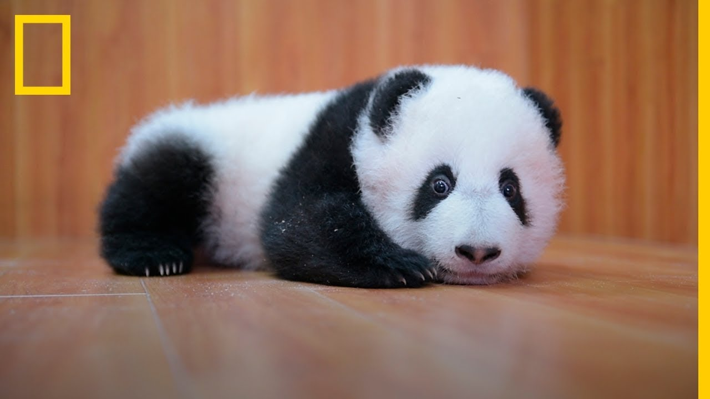

¿El oso panda está en peligro de extinción?
El oso panda es uno de los animales más conocidos y queridos de todo el mundo por su aspecto adorable. Vive en los bosques de bambú de las montañas del centro de China y es muy fácil de identificar por su pelaje blanco y negro y su cuerpo voluminoso. Por desgracia, el oso panda es un animal en peligro de extinción en la actualidad. Se estima que apenas quedan 2.000 ejemplares.
Causas de que el oso panda esté en peligro de extinción
Tiempo atrás, el oso panda gigante se distribuía por toda China, incluso habitaba ciertas regiones de Vietnam y Birmania. Actualmente, ha quedado relegada a ciertas regiones montañosas de Wanglang, Huanglong, Baima y Wujiao. Como otros animales en peligro de extinción, no existe una única razón para el declive del oso panda. Esta especie está siendo amenazada por:
-
Acciones humanas, fragmentación y pérdida de hábitat
-
La construcción de carreteras, presas, minas y otras infraestructuras creadas por el ser humano son una de las principales amenazas que sufren las distintas poblaciones de oso panda. Todos estos proyectos aumentan la fragmentación del hábitat, alejando cada vez más a unas poblaciones de otras.
-
Por otro lado, el incremento del turismo no sostenible en ciertas áreas podría afectar de forma negativa a los pandas. La presencia de ganado y animales domésticos, además de dañar los hábitat en sí, también pueden traer enfermedades y patógenos que podrían afectar a la salud de los osos pandas.
-
Pérdida de diversidad genética.La pérdida continuada de hábitats, incluyendo la desforestación, ha tenido efectos sobre las poblaciones de oso panda gigante. Un hábitat tan fragmentado ha provocado la separación de las grandes poblaciones, resultando en poblaciones aisladas y con un número reducido de ejemplares.
-
Cambio climático. La fuente principal de alimento de los pandas es el bambú. Esta planta tiene una característica floración sincrónica que provoca la muerte de todo el boque de bambú cada 15 o 100 años. Antiguamente, cuando un bosque de bambú moría de forma natural, los pandas podrían migrar fácilmente hasta un nuevo bosque. Estas migraciones no se pueden realizar actualmente, porque no existe conectividad entre los distintos bosques y, algunas poblaciones de pandas, corren el riesgo de morir de hambre cuando su bosque de bambú florezca.El bambú, adicionalmente, también se está viendo afectado por el incremento del efecto invernadero.

Soluciones para evitar la extinción del oso panda
El oso panda gigante ha sido una de las especies por las que más acciones se han llevado a cabo para mejorar su estado de conservación.
- En 1981, China se incorporó a la Convención sobre el Comercio Internacional de Especies en Peligro (CITES), lo que provocó que el comercio de este animal o cualquier parte de su cuerpo fuera ilegal.
- La publicación de la Ley de Protección de la Naturaleza en 1988, ilegalizó el furtivismo de esta especie.
- En 1992, el Proyecto Nacional de Conservación para el Panda Gigante lanzó un plan de conservación, estableciéndose el sistema de reservas de pandas. Actualmente cuenta con 67 reservas.
- A partir de 1992, el Gobierno Chino destinó parte del presupuesto para crear infraestructuras y capacitar al personal de las reservas. Estableció vigilancia para luchar contra el furtivismo, controló las actividades humanas dentro de las reservas e, incluso, reubicó asentamientos humanos fuera de la zona de reserva.
- En 1997, El Programa de Conservación de Bosques Naturales para mitigar los efectos de las inundaciones sobre la población humana tuvo repercusiones positivas sobre los pandas, ya que se prohibió la tala masiva de árboles en el hábitat del panda.
- En ese mismo año nació el Programa Grano a Verde, en el que los propios agricultores reforestaban zonas de ladera muy erosionadas dentro de las regiones que habita el panda.
- Otra estrategia ha sido la de criar pandas en cautividad para su posterior reintroducción, para así aumentar la diversidad genética de la especie en las subpoblaciones más aisladas.
Acciones que podemos tomar para la conservación de el oso panda
- Como el oso panda es un animal en peligro de extinción, hemos considerado que se tenga en cautiverio, agrupando en un solo lugar al macho y a la hembra para lograr su reproducción, evitando reunir a más machos para descartar peleas entre ellos.
- Creemos que a través de campañas de concientización dirigidas a la población, se podría preservar la vida del oso panda.
- También funcionaría hacer carteles sobre su dieta, cuidar su hábitat y sancionar a todo aquel que intente o ponga en peligro su vida. Esta especie se está agotando por nuestra culpa, es un animal indefenso.